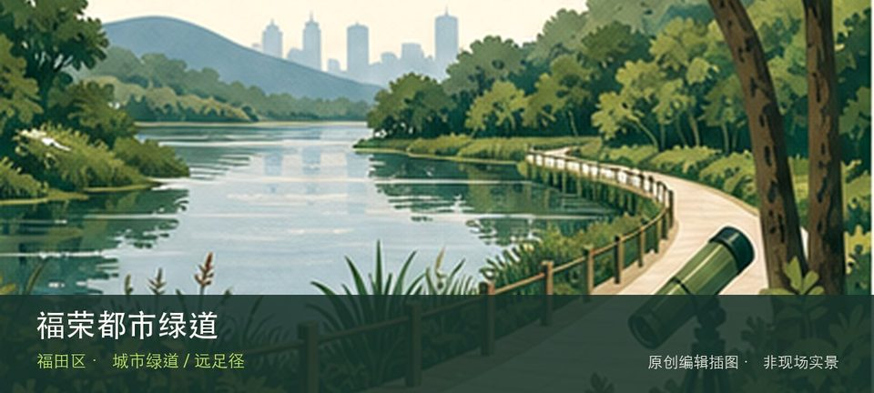

适合谁
适合有基础步行体力、愿意按天气调整路线的人；行动不便者应只选择平缓开放段。

SHENZHEN GUIDE · 035
新洲路至红树林的福荣路南侧 · 城市绿道 / 远足径
福荣都市绿道位于新洲路至红树林的福荣路南侧，约3.08公里的都市健身走廊串联七个社区，开放时间通常为07:00—22:00。若只匆匆经过容易错过重点，社区体育设施带与红树林方向慢行接口恰好构成最有辨识度的观察顺序。现场不必追求一次走完，先在社区体育设施带与红树林方向慢行接口之间确定主线，再按体力、日照和天气保留折返方案。山地、滨水或林下路面会随降雨改变，当天预警和开放边界始终比旧轨迹更优先。
WHY GO
适合有基础步行体力、愿意按天气调整路线的人；行动不便者应只选择平缓开放段。
先从福荣都市绿道公开入口确认路线，用社区体育设施带建立方向感；只有在时间、天气都允许时才追加红树林方向慢行接口。
地铁福民、益田等站或公交下沙总站、石厦南总站进入沿线；按计划里程选择入口，不必走完全程。
导航至福荣都市绿道官方开放入口配套或邻近正规公共停车场；周末满位即改乘公共交通，不在绿道口、村道或消防通道临停。
10 月至次年 4 月较舒适；4—9 月湿热且雷雨集中，强降雨前后不进入山脊、溪谷、陡坡或低洼路段。
NEARBY IDEAS